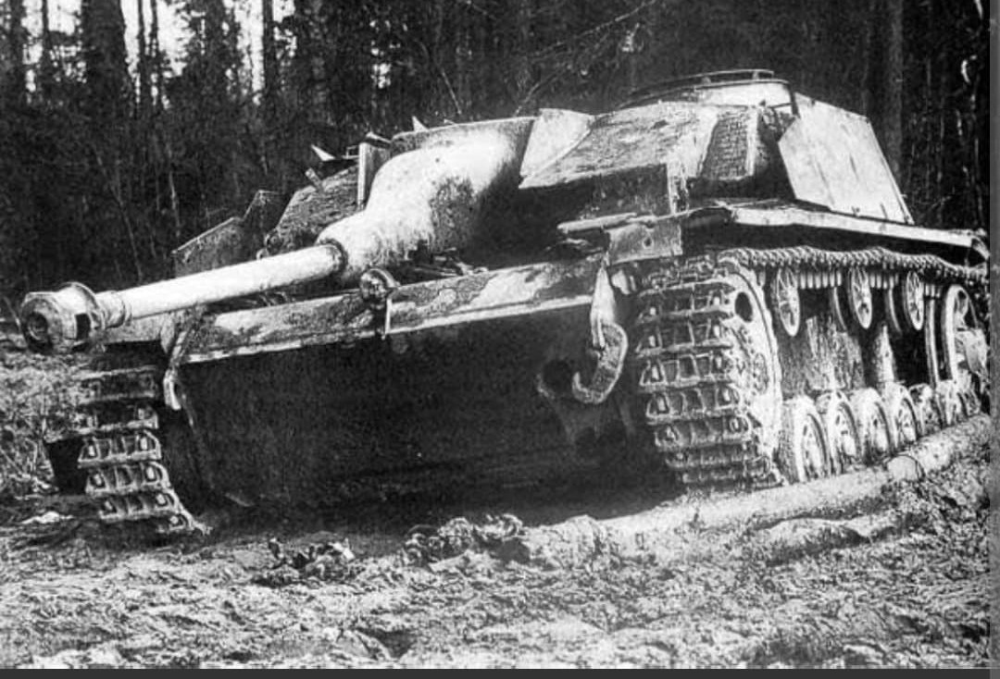
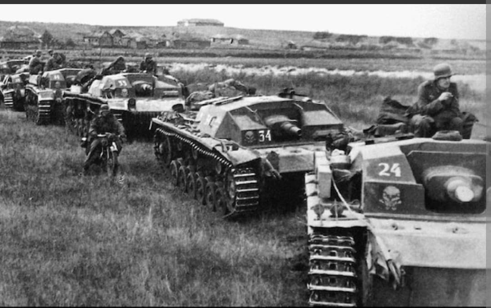
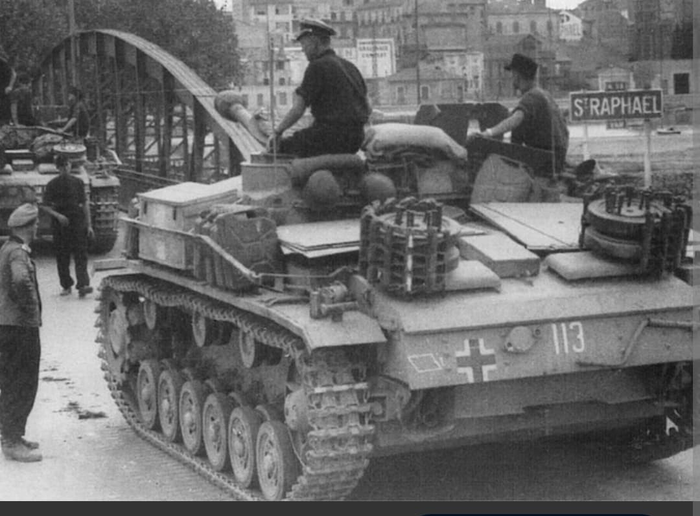

Du canon d'appui d'infanterie au tueur de chars redoutable : le blindé le plus prolifique du IIIe Reich

Véritable pilier méconnu des forces blindées allemandes, le Sturmgeschütz III (StuG III / Sd.Kfz. 142) est le blindé de combat le plus produit par l'Allemagne durant la Seconde Guerre mondiale.
Initialement conçu comme un canon d'assaut sous casemate destiné à fournir un appui de feu rapproché à l'infanterie, le StuG III a progressivement évolué pour devenir l'un des **chasseurs de chars les plus redoutables et efficaces** du conflit, détruisant plus de blindés ennemis que tous les chars Tiger et Panther réunis.
Développé par la firme **Daimler-Benz** à la fin des années 1930 à la demande du général Erich von Manstein, le StuG III réutilise le châssis éprouvé du Panzer III, débarrassé de sa tourelle au profit d'une casemate fixe basse et très profilée.
D'abord armé d'un canon court de 7,5 cm StuK 37 L/24 (Ausf. A à E), il reçoit à partir de 1942 le canon long à haute vélocité **7,5 cm StuK 40 L/43 puis L/48** (Ausf. F et G). Sa silhouette basse (à peine 2,16 m de hauteur) en faisait une cible extrêmement difficile à toucher et une arme d'embuscade redoutable.

Baptisé au feu lors de la campagne de France en 1940, le StuG III s'illustre de manière décisive sur le front de l'Est lors de l'**Opération Barbarossa** et de la bataille de Stalingrad, soutenant sans relâche les vagues d'infanterie face aux fortifications ennemies.
Converti en chasseur de chars, il devient la hantise des T-34 soviétiques et des Sherman alliés en Normandie et dans les Ardennes. Organisés en bataillons indépendants (Sturmgeschütz-Abteilungen), les StuG III compensèrent largement les pénuries de chars de bataille de la Wehrmacht jusqu'aux derniers jours de la guerre.

Produit à plus de **10 000 exemplaires** (en comptant les variantes d'obusier StuH 42) entre 1940 et 1945 par Alkett et MIAG, le StuG III détient un rapport coût/efficacité inégalé au sein du complexe militaro-industriel allemand.
Sa conception économique sans tourelle tournante a démontré la puissance du concept de casemate d'assaut, inspirant de nombreux développements d'après-guerre dans l'artillerie autopropulsée et les véhicules de combat à profil bas.
Page du Musée HOP WW2 – Section Véhicules Terrestres Allemands